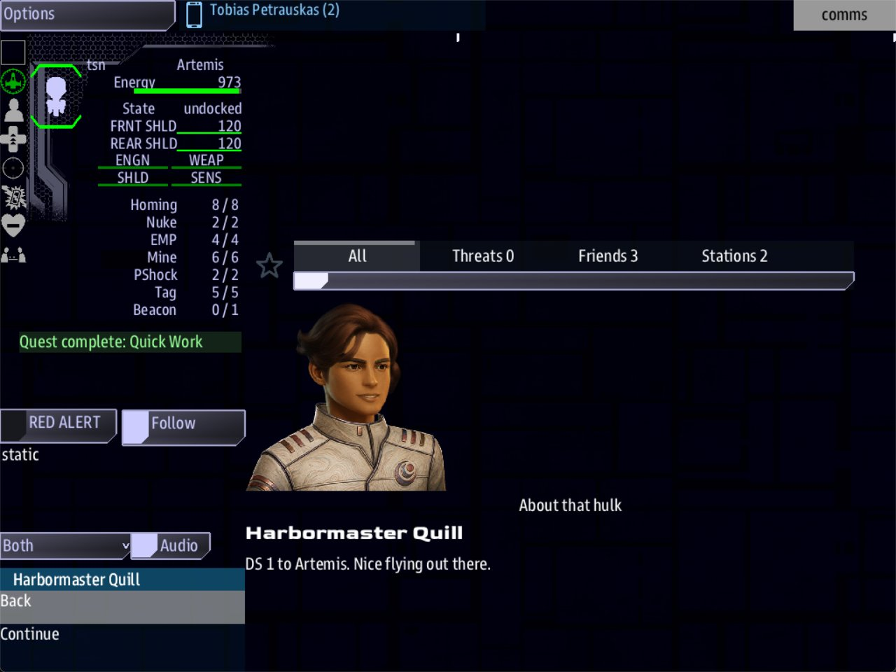

Class 2, Lecture 3 - Dialogue, part 1¶
What you will have at the end¶
When the crew brings the ship in close to the hulk, the station calls. The call waits in a list on the Comms console. When Comms opens it, Harbormaster Quill says one of three opening lines, then one of two closing lines. Play it again and it may read differently.

Comms with Quill's call open: her face, the call's title, and her line under her name.You will edit one file, mission.amd: one new section with one scene, and one short
record among your quests. Nothing in story.mast changes.
The video¶
About 5 minutes. Subtitles are available in the player.
Before you start¶
- Your mission as Lecture 2 left it. Its Characters section holds Harbormaster Quill, and
her key is
quill. If your harbormaster has another key, write yours wherever this page saysquill. sbs lint MyMissionsaysclean.- VS Code with the mission folder open, a command prompt open in
data\missions, and the game closed.
This lecture plays with a Helm and a Comms console:
Words for this lecture:
| Word | Meaning |
|---|---|
| Scene | A record that holds what one person says |
| Take | One way of saying a line. A line that starts with % |
| Call | A scene that arrives at the ship and waits for Comms to open it. The game's word for it is a hail |
| Beat | A moment in the story. A record that makes something happen and gives the crew nothing to do |
Step 1 - Write the scene¶
Open story.mast and look at line 49. You change nothing here:
It is the last of the lines Lecture 11 marked for Class 2. It reads every scene in a
section keyed dialogue.
Go to the very end of mission.amd, below Captain Sable. Leave two blank lines, then
type:
// ---- Dialogue. A scene is who speaks and what they say.
## [Dialogue](dialogue)
### [Quill Checks In](quill_hello)
---
Speaker: quill
When: hail
Title: About that hulk
---
% Artemis, DS 1. We watched you go in close.
% Artemis, this is Quill on DS 1. You got nearer to that hulk than I would have.
% DS 1 to Artemis. Nice flying out there.
| Line | What it means |
|---|---|
## [Dialogue](dialogue) |
The section that holds your scenes. Two hashes, and the key is exactly dialogue |
### [Quill Checks In](quill_hello) |
Three hashes, a name for your own use, then the scene's key |
Speaker: quill |
Who is talking: a character's key |
When: hail |
This scene is a call that comes in to the ship |
Title: About that hulk |
What the call is about. The crew reads it beside her name before they answer |
The % lines |
What she says |
Save, and run lint:
It says clean.
Step 2 - Takes¶
Each % line is a take: one way of saying the same thing. Each time the scene plays,
the game uses one take, picked by chance. Write two or three and the character stops
sounding like a recording.
Three rules for a take.
- One take is one line in the file. However long it is, do not press Enter in the
middle of it. Lint warns you when you do, with the code
line-wrapped. - Takes are alternatives, not a list. The crew hears one of them. If she must say two things, that is Step 3.
- Plain keyboard characters only. No curly quotes and no long dashes from a word
processor. And never begin a take with a curly bracket,
{: the game reads that as a condition, and the take is not used.
Step 3 - Say a second thing¶
To make her say one thing and then another, write blocks. Each block starts with a line
that is @ and her key.
Change the lines under the fence so the scene reads:
### [Quill Checks In](quill_hello)
---
Speaker: quill
When: hail
Title: About that hulk
---
@quill
% Artemis, DS 1. We watched you go in close.
% Artemis, this is Quill on DS 1. You got nearer to that hulk than I would have.
% DS 1 to Artemis. Nice flying out there.
@quill
% Now tell me she is as dead as she looks.
% So. Is anybody home?
Each @quill line starts the next thing she says. The game picks one take from each
block, so this scene can read six different ways. The crew reads the first block, presses
Continue, and reads the second.
Write @quill, the key, in small letters, with nothing else on the line.
@Harbormaster Quill does not work.
Keep to one voice in a scene for now. Lecture 5 adds a second.
Save. Run lint: clean.
Step 4 - Have the story place the call¶
A scene is words on a page until something in the story places the call. Lint is clean,
and if you played the mission now, nobody would call.
What places a call is a record among your quests. Scroll up to the Quests section and find Quick Work, its last record. Below Quick Work's description, leave a blank line and type:
### [DS 1 Calls](ds1_calls)
---
Beat
Starts when: reach derelict 500
Action:
- quill hails quill_hello
---
DS 1 saw the ship go in close, and wants to hear about it.
Leave a blank line below it, above the // ---- Science scans note.
| Line | What it means |
|---|---|
### [DS 1 Calls](ds1_calls) |
Three hashes. This is a record of its own, not a step of Salvage Run |
Beat |
A kind word, alone on the first line of the fence, the way Arc was in Lecture 9. A beat is a moment in the story, not a quest. It is not in the Quest Log |
Starts when: reach derelict 500 |
When the moment comes. See below |
Action: |
What happens the moment it starts |
- quill hails quill_hello |
Two spaces, a dash, a space. Then who calls, the word hails, and the key of the scene |
On a beat, Starts when: takes the same words as Done when:. Until now you have
written two things after Starts when:: at once and revealed. On a beat it also takes
any of the words you write after Done when:. Starts when: reach derelict 500 means:
this begins when a player ship comes within 500 of something that wears derelict.
That is a beat's privilege. The same line on an ordinary quest, one with no Beat word,
starts nothing: the quest only sits on offer.
Those are the very words that finish Close Inspection. So the call arrives at the same moment the crew is told that step is done.
Why not Then: reveal, as in Lecture 9? Close Inspection's Then: line is already at
work, on Find the Lifeboat. A beat with a Starts when: of its own needs nothing from
any other record, so that fence stays as it is.
Save. Run lint: clean.
Your finished pieces¶
In the Quests section, below Quick Work:
### [DS 1 Calls](ds1_calls)
---
Beat
Starts when: reach derelict 500
Action:
- quill hails quill_hello
---
DS 1 saw the ship go in close, and wants to hear about it.
At the end of the file:
// ---- Dialogue. A scene is who speaks and what they say.
## [Dialogue](dialogue)
### [Quill Checks In](quill_hello)
---
Speaker: quill
When: hail
Title: About that hulk
---
@quill
% Artemis, DS 1. We watched you go in close.
% Artemis, this is Quill on DS 1. You got nearer to that hulk than I would have.
% DS 1 to Artemis. Nice flying out there.
@quill
% Now tell me she is as dead as she looks.
% So. Is anybody home?
The whole file is in example\.
Step 5 - Check it¶
Every row below was made on purpose, one at a time, on the finished file. Lint was run. Then the game was run without a screen, by a script that put the ship beside the hulk, read the list of calls a Comms console would show, opened the call, and pressed Continue and Close.
The scene. Lint names these.
| Mistake | What the game does | Lint says |
|---|---|---|
Speaker: quil (a misspelled key) |
Places the call, and lists it as quil - About that hulk. Opened, each block is still spoken by the person its @ line names |
dangling-speaker, and hail-speaker-mismatch |
Speaker: Harbormaster Quill (her name) |
Places the call, and it reads as it should. Use the key all the same | dangling-speaker, and hail-speaker-mismatch |
No Speaker: line |
Places the call as Quill: the beat's Action: line names her |
hail-speaker-mismatch |
No When: hail line, or When: comms |
Places the call all the same | hail-not-a-hail |
| Curly quotes or a long dash in a take | Shows the plain character in its place | non-ascii, once for each |
| Two scenes with the same key | Uses the lower one | duplicate-key |
| A scene with no takes | Opens a call with nothing said | hail-empty |
| A take broken onto two lines | Each half is a take, so the crew gets half a sentence | line-wrapped, on the second half |
#### on the scene's heading |
Reads it as if it had three. Fix it all the same | heading-level-jump, an error |
## on the scene's heading |
Loses the scene. No call arrives | section-not-loaded, and its sentence says to give the heading three hashes |
The section keyed conversations |
Loses every scene. No call arrives | section-not-loaded |
| The scene typed up in the Characters section | No call arrives. The game makes a PERSON called Quill Checks In | hail-unknown-scene, an error, and unknown-field |
The scene's key typed with a capital: (Quill_Hello) |
The call still arrives. Use small letters all the same | dangling-action-ref |
The scene's closing --- left out |
The call is listed as Harbormaster Quill, with no title. Opened, nothing is said |
unclosed-data-fence, an error |
| No Characters section in the file | Places the call. The caller is named quill, and has no face |
dangling-speaker |
The beat. Lint names these.
| Mistake | What the game does | Lint says |
|---|---|---|
- quill hails quill_helo (a misspelled scene) |
No call arrives. mast.runtime.log says why |
dangling-action-ref |
- quill hail quill_hello (the verb) |
No call arrives | unknown-action-verb. Its sentence lists the verbs |
- quil hails quill_hello, or another person's key: - ives hails quill_hello |
Places the call, as Quill. The scene's Speaker: decides who is calling |
hail-speaker-mismatch |
The dash under Action: left off |
No call arrives | fence-syntax, an error |
| The dash line typed at the left edge | No call arrives | fence-syntax, an error: a list item needs a Label: above it |
Beat typed on the second line of the fence |
No call arrives | fence-syntax, an error: a kind has to be the first line |
Beat: with a colon |
No call arrives | unknown-field |
Starts when: revealed on the beat |
No call arrives | never-revealed |
Actions: for Action: |
No call arrives | unknown-field, and quest-never-finishes |
The Action: lines typed below the closing --- |
No call arrives. The two lines are read as the beat's description | quest-never-finishes |
| The beat typed with two hashes | No call arrives | section-not-loaded |
What lint cannot see. For every row of this table lint says clean.
| You wrote | What happens |
|---|---|
No Starts when: line on the beat, or Starts when: at once |
The call arrives as the game starts, before anyone has flown anywhere |
Done when: in place of Starts when: on the beat |
The same |
Starts when: reach hulk 500 (a role nothing wears) |
No call arrives |
Starts when: reach derelict (no number) |
The call still arrives when the ship is close. Give the number all the same: without it the game decides how close |
| The beat typed with four hashes | It becomes a step of Quick Work. The call still arrives. Give it three |
| The beat typed down in the Dialogue section | No call arrives |
No Beat line |
No call arrives. DS 1 Calls is an ordinary quest now, on offer on the Quest Log's second list, Available Quests |
Two - quill hails quill_hello lines |
The call is placed once |
- quill hails with no scene after it |
The call still arrives. Name the scene all the same |
No Title: line |
The call is listed as Harbormaster Quill, and nothing else |
@Harbormaster Quill, @ quill or @quill: for the second @quill |
That line is not the start of a block. It becomes one more take, so now and then she SAYS it, and the two things she had to say become one |
No @quill above the second block |
Its takes join the first block. She says one thing where you wrote two |
A take that begins with { |
That take is never used |
A take with no % in front |
The line is still said. Keep the %: it is what makes a line a take |
A % with nothing after it |
A blank take. Now and then she says nothing |
## [Dialogue](Dialogue) (a capital in the key) |
Works. Keep it in small letters all the same |
Face: woman on Quill (Lecture 2) |
The call arrives under her name. Her face is the word woman, which is no face. Nobody has looked at what the game draws for it |
Face: female on Quill |
The call arrives with a portrait. It is a different woman each game |
These are fine.
| You wrote | Result |
|---|---|
Speaker: Quill or @Quill, with a capital |
Works. Lint grumbles about the first: dangling-speaker. Use the key as it is in her heading |
%Artemis, with no space after the % |
Works |
| Curly brackets inside a take, or an apostrophe, a colon, a question mark, a percent sign | Works. Shown as typed |
| A take as long as a paragraph | Works. Nobody has looked at how it is drawn |
| The dash line indented four spaces, or with a tab | Works. Two spaces is what the page uses |
Action: quill hails quill_hello, all on one line |
Works. Use the list all the same: a beat can do more than one thing |
beat with a small b |
Works |
A # typed in front of line 49 of story.mast |
The call still arrives in this mission. Leave the line alone all the same |
Speaker: sable, - sable hails quill_hello, and @sable above each block |
Works. Anyone in your cast can call, whatever side they are on. Change all three: the list shows the Speaker:, and each block is spoken by the person its @ line names |
Step 6 - Play it¶
- Look at Comms before you fly anywhere. No call is waiting.
- Fly to the Unknown Hulk and go inside 500. Close Inspection shows
Done. - On Comms, a list named Incoming Hails now has one row: Harbormaster Quill - About that hulk.
- Select the row. The call opens with Quill's face, her name, and one of your three opening takes.
- The list now offers Back and Continue. Press Continue for one of your two closing takes.
- The list offers Back and Close. Press Close. The call is over.
- Finish the story as before: the lifeboat, the tug, home to DS 1. Nothing about the call changes how the story ends, or what it pays.
- Close the game. Open
mast.compile.logandmast.runtime.log. Both are empty.
Back puts the call back in the list without ending it. Comms can read it through and open it again when the captain is ready. Opened again, it starts from her first block, with the same takes.
Start the mission again and play to the same point. The takes are picked again, so the scene may read differently.
If something goes wrong¶
| What you see | Likely cause |
|---|---|
| The ship is inside 500 of the hulk and no call arrives | Run lint first. If it is clean, look at the beat's Starts when: line: the role has to be derelict, and the number has to be there. Then look for the beat in the wrong section |
| The call arrives as the game starts | The beat has no Starts when: line, or it says at once, or it says Done when: |
The caller is named quill, with no face |
The Characters section is missing, or its key is not characters |
| The caller has her name, and her portrait is missing or wrong | Her Face: line is not a keyword and not a whole face string. See Lecture 2 |
| The call opens and nothing is said | The scene has no takes. Or the take that came up is a % with nothing after it |
| A line reads as half a sentence | A take is broken onto two lines |
| She says one thing where you wrote two | The second block has no @quill line above it, or that line has something else on it |
Now and then she says @Harbormaster Quill out loud |
The same. An @ line is @ and a key, and nothing else |
| No call arrives, and DS 1 Calls is in the Quest Log, under Available Quests | The Beat line is missing, or has a colon |
After a play, mast.runtime.log has a line about hails |
The beat's Action: line names a scene the game does not have |
Exercise¶
Give Quill a second call, later in the story.
- Write a second scene at the end of the Dialogue section. Give it a new key, a
Title:and two or three takes. One voice. - Below DS 1 Calls, add a second beat with a key of its own. Give it
Starts when: reach lifeboat 500, and anAction:line that calls your new scene. - Run lint, then play. At the hulk the first call arrives. At the lifeboat the second one does. If the first is still waiting, both are in the list.
Checkpoint¶
You are done when all four are true:
sbs lint MyMissionanswersclean, with0 error(s), 0 warning(s).- No call is waiting before the ship reaches the hulk.
- Inside 500 of the hulk, Harbormaster Quill - About that hulk is in the Incoming Hails list. Opened, she says two things, with Continue between them and Close at the end.
- Over a few games, her opening line is not always the same one.
Next¶
Lecture 4 gives the crew something to say back: answers, where an answer leads, and what an answer does.
Further reading¶
- "Incoming hails" in the library documentation: everything a call can carry, and a
table of when an
Action:runs. - "The AMD file format": the
@SpeakerandAction:sections. - "Dialogue" in the Open Universe writer's guide. It is written for Open Universe. Its
scenes say
When: comms, which does nothing in a mission like yours.
Download this lecture's finished files (a zip of its example folder).